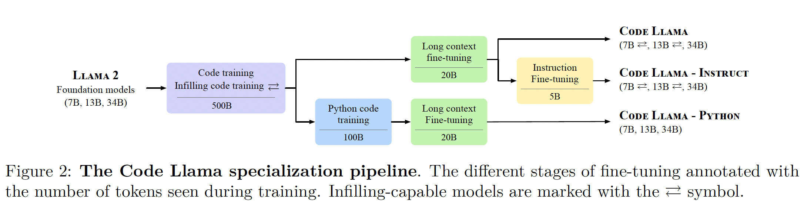

Code Llama#
Note
Code Llama is a family LLMs for code generation and infilling derived from Llama 2.
Introduction#
Our approach is based on gradually specializing and increasing the capabilities of Llama 2 models by applying a cascade of training and fine-tuning steps:
Code-training from foundation models. While most LLMs for code generation such as AlphaCode or StarCoder are trained on code only, Codex was fine-tuned from a general language model. We also start from a foundation model (Llama 2) pretrained on general-purpose text and code data. Our comparison shows that initializing our model with Llama 2 outperforms the same architecture trained on code only for a given budget.
Infilling. Autoregressive training and fine-tuning of LLMs is suitable for prompt completion, but does not provide the capability to fill a missing portion of text while taking the full surrounding context into account. Our code-training for 7B and 13B Code Llama models features a multitask objective consisting of both autoregressive and causal infilling prediction, enabling applications such as real-time completion in source code editors or docstring generation.
Long input contexts. Unlocking repository-level reasoning for completion or synthesis – as opposed to function-level or file-level – requires prompting the model with much longer context than the 4,096 tokens supported by Llama 2. We propose an additional fine-tuning stage that extends the maximum context length from 4,096 tokens to 100,000 tokens by modifying the parameters of the RoPE positional embeddings used in Llama 2.
Instruction fine-tuning. For end-users, the utility of LLMs is significantly improved by instruction fine-tuning. Code Llama - Instruct variants are further fine-tuned on a mix of proprietary instruction data for improved safety and helpfulness, and a new machine-generated self-instruct dataset created by prompting Llama 2 for coding problems and Code Llama to generate associated unit tests and solutions.
Different combinations of these approaches lead to a family of code-specialized Llama 2 models with three main variants that we release in three sizes (7B, 13B and 34B parameters):
Code Llama: a foundational model for code generation tasks,
Code Llama - Python: a version specialized for Python,
Code Llama - Instruct: a version fine-tuned with human instructions and self-instruct code synthesis data.

Code Llama: Specializing Llama 2 for code#
Dataset#
We train Code Llama on 500B tokens during the initial phase, Code Llama is trained predominantly on a near-deduplicated dataset of publicly available code. We also source 8% of our samples data from natural language datasets related to code. This dataset contains many discussions about code and code snippets included in natural language questions or answers. To help the model retain natural language understanding skills, we also sample a small proportion of our batches from a natural language dataset. Data is tokenized via byte pair encoding (BPE), employing the same tokenizer as Llama and Llama 2.
Infilling#
Code infilling is the task of predicting the missing part of a program given a surrounding context.
We train infilling models following the concept of causal masking, where parts of a training sequence are moved to the end, and the reordered sequence is predicted autoregressively. More precisely, we split training documents at the character level into a prefix, a middle part and a suffix with the splitting locations sampled independently from a uniform distribution over the document length. We randomly format half of the splits in the prefix-suffix-middle (PSM) format and the other half in the compatible suffix-prefix-middle (SPM) format. We extend Llama 2’s tokenizer with four special tokens that mark the beginning of the prefix, the middle part or the suffix, and the end of the infilling span.
Long context fine-tuning#
Our strategy is fine-tuning by position interpolation. Specifically, with rotary embeddings, the query and key vectors \(\mathbf{x}_{n}\) at position \(n\) are subject to a linear transformation \(\mathbf{R}_{\Theta,n}^{d}\mathbf{x}_{n}\), where \(\mathbf{R}_{\Theta,n}^{d}\mathbf{x}_{n}\) is a block diagonal matrix with entries of the form
and \(d\) denotes the embedding dimension. denotes the embedding dimension. Rotation frequencies are computed as \(\theta_{i} = \theta^{-2i/d}\), and we increase the base period \(\theta\) from 10,000 to 1,000,000 for fine-tuning.
Instruction fine-tuning#
Our instruction fine-tuned models Code Llama - Instruct are based on Code Llama and trained to answer questions appropriately. They are trained on three different types of data.
Proprietary dataset. We use the instruction tuning dataset collected for Llama 2. Specifically, we use the version referred to in their paper as “RLHF V5”, collected trough several stages of reinforcement learning from human feedback and human feedback annotation. It combines thousands of Supervised Fine-Tuning and millions of Rejection Sampling examples. Each example consists of a multi-turn dialogue between a user and an assistant. For Rejection Sampling, the output was selected among several generations using a reward model.
Self-instruct. Our proprietary dataset contains few examples of code-related tasks. Collecting supervised data from human annotators or training from human feedback is expensive for coding tasks as it requires input from professional developers. Instead of human feedback, we use execution feedback to select data to train our instruct model. We construct the self-instruction dataset following the recipe below, resulting in ∼14,000 question-tests-solution triplets:
Generate 62,000 interview-style programming questions by prompting Llama 2 70B.
[INST] Write 50 programming interview questions of easy and medium complexity. Provide questions on a diverse range of subjects, and make sure no two questions are alike. Make sure the problems can be solved with a single standalone Python function using standard libraries. [/INST]
De-duplicate the set of questions by removing exact duplicates, resulting in ∼52,000 questions.
For each of these questions:
Generate unit tests by prompting Code Llama 7B
[INST] Your task is to write 5 tests to check the correctness of a function that solves a programming problem.
The tests must be between [TESTS] and [/TESTS] tags.
You must write the comment “#Test case n:” on a separate line directly above each assert statement, where n represents the test case number, starting from 1 and increasing by one for each subsequent test case.Problem: Write a Python function to get the unique elements of a list.
[/INST]
Generate ten Python solutions by prompting Code Llama 7B
[INST] Your task is to write a Python function to solve a programming problem.
The Python code must be between [PYTHON] and [/PYTHON] tags.
You are given one example test from which you can infere the function signature.Problem: Write a Python function to get the unique elements of a list.
Test: assert get_unique_elements([1, 2, 3, 2, 1]) == [1, 2, 3]
[/INST]
Run the unit tests on the ten solutions. Add the first solution that passes the tests (along with its corresponding question and tests) to the self-instruct dataset.
Rehearsal. In order to prevent the model from regressing on general coding and language understanding capabilities, Code Llama - Instruct is also trained with a small proportion of data from the code dataset (6%) and our natural language dataset (2%).